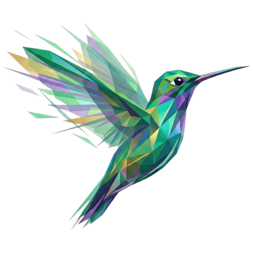

@{ >>" Zymbol-Lang " }Sixteen programs, eight languages and four Zymbol engines, the same printed answer. Pick any of them as the reference and the rest is measured against it. One machine, elapsed time per process — and the programs, their twins and the script that measured them are public.
Choose the reference — it becomes 1.00 — and how to look at the figures. The link in the address bar keeps your choice.
Zymbol, PHP, Lua, Perl, Ruby and Python are interpreters: they run the program without turning it into machine code. PHP's opcache JIT is off on the command line and Ruby's YJIT is off without --yjit, so both run here as interpreters. JavaScript (Node, V8) and Julia, marked JIT, compile to machine code while they run, and are here as the reference of what compiling buys. Julia starts in 194 ms before running anything: on programs this short, start-up is a large part of its figures — subtract it and Julia comes to 0.14× of Zymbol, next to JavaScript's 0.11×.
Said plainly, with Zymbol v0.0.11 as the reference: Zymbol is the third fastest of the six interpreters. PHP is faster on 13 of the sixteen and Lua is faster on 12 of the sixteen — mature virtual machines with decades of tuning behind them, and Lua's is a register machine like Zymbol's; they are the bar now. Zymbol is ahead of Perl, Ruby and Python in the mean, and still behind one of them on a few programs: Perl on array_update, hof_chain, matmul, sort_cmp_300k; Ruby on collatz, fib_rec, matmul, nqueens, tak; Python on fib_rec, tak. With start-up subtracted, PHP (0.38×), Lua (0.45×) and Ruby (0.83×) are ahead of it. The deep-recursion programs, fib_rec and tak, are where a call still costs Zymbol most, and that is the next thing being worked on.
Zymbol against itself — no other language here. v0.0.10 ran the tree-walker by default; its register VM was zymbol run --vm. From v0.0.11 the VM is the default, and this release's work went into it. Elapsed milliseconds, median of 5 runs, and each against v0.0.11 = 1.00.
--vm, elapsed time| Program | v0.0.11 · VM | v0.0.10 · --vm | v0.0.10 · tree-walker (its default) |
|---|---|---|---|
array_update | 6.2 ms1.00× | 9.2 ms1.49× | 16 ms2.64× |
collatz | 337 ms1.00× | 461 ms1.37× | 2094 ms6.22× |
fib_rec | 911 ms1.00× | 1051 ms1.15× | 8486 ms9.32× |
hof_chain | 330 ms1.00× | 428 ms1.30× | 2332 ms7.06× |
loop_mod | 427 ms1.00× | 788 ms1.84× | 2592 ms6.07× |
mandelbrot | 185 ms1.00× | 240 ms1.30× | 2932 ms15.89× |
match_loop | 253 ms1.00× | 378 ms1.49× | 1859 ms7.34× |
matmul | 406 ms1.00× | 520 ms1.28× | 3805 ms9.36× |
nqueens | 270 ms1.00× | 357 ms1.33× | 2828 ms10.49× |
primes_trial | 204 ms1.00× | 294 ms1.44× | 2186 ms10.69× |
sort_builtin | 94 ms1.00× | 120 ms1.27× | 469 ms4.96× |
sort_cmp_300k | 356 ms1.00× | 677 ms1.90× | 3181 ms8.94× |
sort_cmp_4k | 8.7 ms1.00× | 11 ms1.22× | 31 ms3.57× |
strings_scan_long | 30 ms1.00× | 499 ms16.43× | 179 ms5.88× |
strings_scan_short | 65 ms1.00× | 139 ms2.12× | 346 ms5.28× |
tak | 359 ms1.00× | 506 ms1.41× | 5005 ms13.94× |
| geometric mean, v0.0.11 = 1 | 1.00× | 1.68× | 7.22× |
What changed in the VM, in short: a counted loop and a for-each that end each turn in one instruction, $> $| $< calling their lambda on the VM's own frames, a sort comparator that is a plain comparison evaluated without a call, an assignment written by the instruction that computes it, a text that keeps its character count, a dictionary found by a fast seeded hash, and a call that stopped paying for work it did not need. Nothing in the language changed: every program prints what it printed.
One machine, one session: AMD Ryzen 7 4800H with Radeon Graphics, Linux 6.12.111+deb13-amd64.
| Language or engine | Version | Kind |
|---|---|---|
| Zymbol v0.0.11 · VM | v0.0.11 (development branch, 7ef269c) | register VM, the default |
| Zymbol v0.0.11 · tree-walker | v0.0.11 (development branch, 7ef269c) | tree-walker, --tw |
| Zymbol v0.0.10 · VM | v0.0.10 | register VM, --vm |
| Zymbol v0.0.10 · tree-walker | v0.0.10 | tree-walker, its default |
| PHP | 8.4.26 | Zend VM; opcache JIT off on the command line |
| Lua | 5.4.7 | PUC Lua, register VM |
| Perl | v5.40.1 | interpreter |
| Ruby | 3.3.8 | CRuby VM; YJIT off without --yjit |
| Python | 3.13.5 | CPython |
| JavaScript · Node | v24.16.0 | JIT compiler |
| Julia | 1.12.7 | JIT compiler |
main() function: a global in Julia is untyped, and measuring that would measure a use nobody writes.7ef269c); the release notes will carry the final ones.